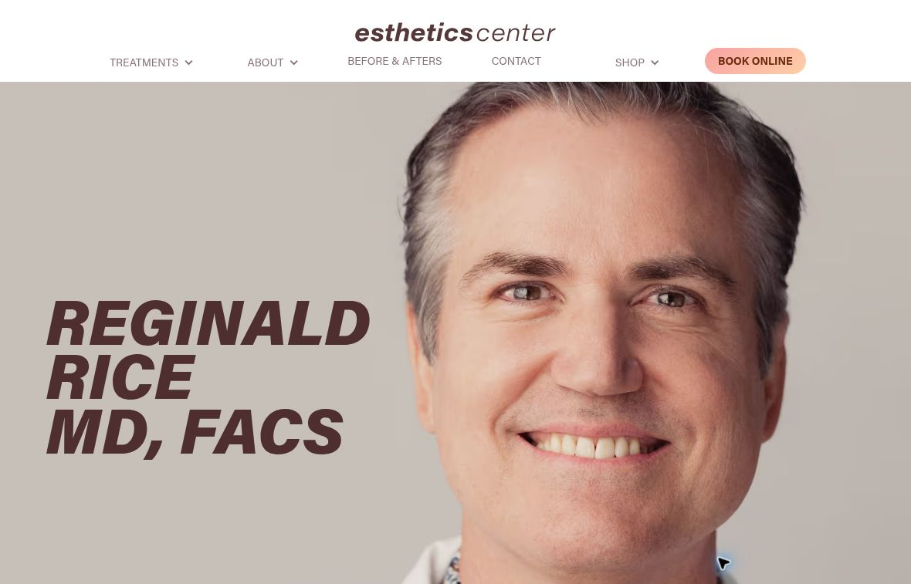

Pick
Choose one location and agree which claims your team can approve.
A local Sacramento marketing team.
We built this audit for Esthetics Center.
Reach nearby people on Facebook and Instagram.
Real videos, photos and clear messages.
Get found through your Google Business Profile, site and blogs.
Named clinicians, real treatment examples and a booking entry with four locations give people useful starting points.
We reviewed your public pages as a new patient deciding whether to enquire.

The booking entry loads with location, provider and first-available choices. It gives little guidance first.
New patients may not know which route fits their question.
We’d add a short ‘new here?’ guide and a clear route for booking help.
The ‘Read More’ review links we checked return to the same page, not the source.
People must do more work to check the review.
We’d link each quote to the right review when possible, and add its location and date.
The feedback page links reviews to a treatment giveaway. We did not test each route.
Patients may not know what is private, public or promotional.
With your team, we’d split private feedback, public reviews and giveaway entry.
Choose one location and agree which claims your team can approve.
Film a short clinician answer and clear up its booking page.
Test local ads and count real enquiries, not just clicks.
Let’s choose one location, one useful answer and one booking step to improve.